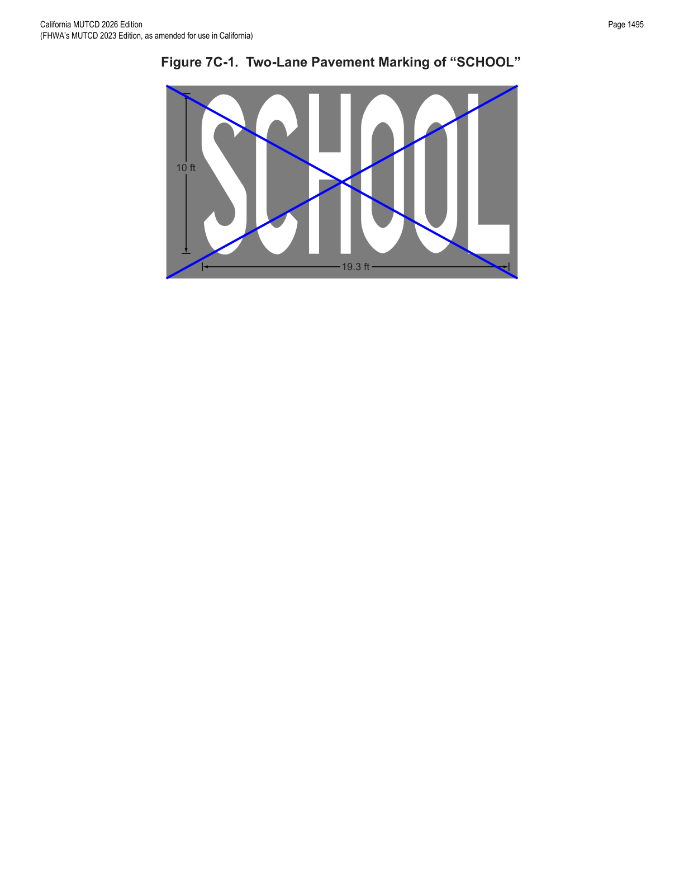
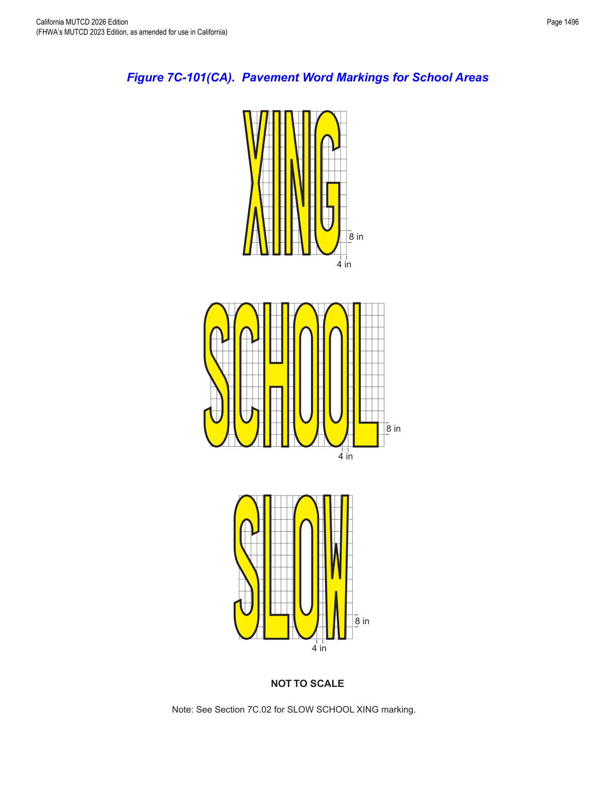

Part 7 · Traffic Control for School Areas · Chapter 7C
Markings
Covers crosswalk line markings at school crossings — including California's distinctive yellow school crosswalk — and the SCHOOL word/arrow pavement markings used to alert approaching drivers.
7C.01Crosswalk Markings
- 00aWhen transverse crosswalk lines are used, they shall be solid white or yellow, marking both edges of the crosswalk, except as noted in the Option paragraphs below. Refer to CVC § 21368. They shall be not less than 12 inches nor greater than 24 inches in width.
- 00bIf transverse crosswalk lines are used to mark a crosswalk, the gap between the lines should not be less than 6 feet. If diagonal or longitudinal lines are used without transverse lines to mark a crosswalk, the crosswalk width should not be less than 6 feet.
- 00cCrosswalk lines on both sides of the crosswalk should extend across the full width of pavement or to the edge of the intersecting crosswalk to discourage diagonal walking between crosswalks.
- 01Crosswalks should be marked at all intersections on established routes to a school where there is substantial conflict between motorists, bicyclists, and student movements; where students are encouraged to cross between intersections; where students would not otherwise recognize the proper place to cross; or where motorists or bicyclists might not expect students to cross (see Figure 7A-1).
- 02An engineering study considering the factors described in Section 3C.02 should be performed before a marked crosswalk is installed at a location away from a traffic control signal or an approach controlled by a STOP or YIELD sign.
- 03Because non-intersection school crossings are generally unexpected by the road user, warning signs (see Section 7B.03) should be installed for all marked school crosswalks at non-intersection locations. Adequate visibility of students by approaching motorists and of approaching motorists by students should be provided by parking prohibitions or other appropriate measures.
- 04Section 3C.03 contains provisions regarding the placement and design of crosswalks, and Section 3B.19 contains provisions regarding the placement and design of the stop lines and yield lines that are associated with them. Provisions regarding the curb markings that can be used to establish parking regulations on the approaches to crosswalks are contained in Section 3B.18.
- 05Examples of school area signing, markings, flashing beacons, and overhead school signs are shown in Figures 7B-2(CA) and Figures 7B-101(CA) through 7B-104(CA).
- 06Refer to CVC § 21368 for crosswalks near schools.
- 07Whenever a marked pedestrian crosswalk has been established in a roadway contiguous to a school building or school grounds, it shall be yellow. If any one of the crosswalks is required to be yellow at an intersection, then all other marked pedestrian crosswalks at that intersection shall also be yellow. Refer to CVC § 21368.
- 08A marked pedestrian crosswalk may be yellow if the nearest point of the crosswalk is not more than 600 feet from a school building or school grounds. Refer to CVC § 21368.
- 09A marked pedestrian crosswalk may be yellow if the nearest point of the crosswalk is not more than 2,800 feet from a school building or school grounds and there are no intervening crosswalks other than those contiguous to the school grounds, and it appears that the facts and circumstances require special marking for the protection and safety of persons attending the school. Refer to CVC § 21368.
- 10Diagonal or longitudinal markings should be used when a crosswalk is marked at an uncontrolled crossing location. The diagonal or longitudinal lines should be 12 to 24 inches wide and spaced 12 to 60 inches apart. The spacing design should avoid the wheel paths.
- 11For added visibility, the area of a crosswalk may be marked with white or yellow diagonal lines at a 45-degree angle to the line of the crosswalk or with white or yellow longitudinal lines parallel to traffic flow. Refer to CVC § 21368. When diagonal or longitudinal lines are used to mark a crosswalk, the transverse crosswalk lines may be omitted.
In practice, the yellow-versus-white distinction is entirely a function of distance from school property: within 600 feet the crosswalk may be yellow at the engineer's discretion, and between 600 and 2,800 feet it may still be yellow if there are no intervening crosswalks and site-specific safety facts support it — beyond that, or without those findings, the standard white crosswalk markings in Chapter 3B apply.
7C.02Pavement Word, Symbol, and Arrow Markings
- 01If used, the SCHOOL word marking may extend to the width of two approach lanes (see Figure 7C-1).
- 02If the two-lane SCHOOL word marking is used, the letters should be 10 feet or more in height.

- 03Section 3B.20 contains provisions regarding other word, symbol, and arrow pavement markings that can be used to guide, warn, or regulate traffic.
- 04If used, the SCHOOL pavement marking shown in Figure 7C-101(CA) shall be used and it shall be restricted to a single lane.
- 05On State highways, all letters, numerals, and symbols should be in accordance with Caltrans' Standard Plans publication. See Section 1A.05 for more information regarding this publication.
- 06The SLOW SCHOOL XING marking shall be used in accordance with the provisions of CVC § 21368 in advance of all yellow school crosswalks (see Figure 7C-101(CA)). They shall not be used where the crossing is controlled by stop signs, traffic signals, or yield signs. They shall be yellow, with the word XING at least 100 feet in advance of the school crosswalk.
- 07The SCHOOL XING marking and crosswalks may be used at remote locations outside of the school zone.
- 08Remote crosswalk locations are locations near schools which are not included in CVC § 21368 criteria. Also refer to Section 7C.02.
- 09If the SCHOOL XING marking and crosswalks are used at remote locations outside of the school zone, they shall not be yellow (refer to CVC § 21368), but white.
- 10The SCHOOL XING marking should be used in advance of all white school crosswalks.
- 11The SCHOOL marking may be used with the School Assemblies A(CA) or C(CA), except at locations where SLOW SCHOOL XING markings are required.
- 12If the SCHOOL marking is used with the School Assemblies A(CA) or C(CA) (see Sections 7B.02 and 7B.05), it shall be yellow.
- 13If used, the SCHOOL marking should be located adjacent to the School Assemblies A(CA) or C(CA) (see Sections 7B.02 and 7B.05).
- 14Refer to Section 3C.03 for more details on the SCHOOL marking.

In practice, the single-lane SCHOOL / SLOW / XING word-marking series (Figure 7C-101(CA)) is what actually appears on the roadway approaching a marked school crosswalk in most California cities; the oversized two-lane SCHOOL marking of Figure 7C-1 is reserved for wider approaches where a single-lane marking would not be read in time.
★ Key Takeaways — Chapter 7C
- Transverse crosswalk lines are 12–24 inches wide; a minimum 6-foot gap (or 6-foot width for diagonal/longitudinal-only markings) applies, and lines should extend the full width of the pavement.
- Crosswalks contiguous to school grounds must be yellow; crosswalks within 600 feet may be yellow at engineering discretion, and within 600–2,800 feet may be yellow only with no intervening crosswalks and documented safety justification (CVC § 21368).
- Diagonal/longitudinal crosswalk lines (12–24 in wide, 12–60 in spacing) are the recommended treatment at uncontrolled crossings and allow the transverse lines to be omitted.
- The single-lane SCHOOL/SLOW/XING pavement word marking (Figure 7C-101(CA)) is mandatory in advance of every yellow school crosswalk not controlled by a stop sign, signal, or yield sign, with XING at least 100 feet ahead of the crosswalk; the same marking is white (never yellow) at remote locations outside the school zone.
- An oversized, two-lane-wide SCHOOL word marking with 10-foot-or-taller letters is available (Figure 7C-1) where a wider approach warrants it.